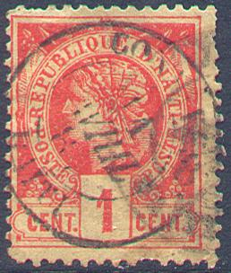
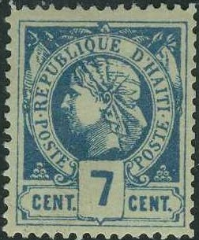
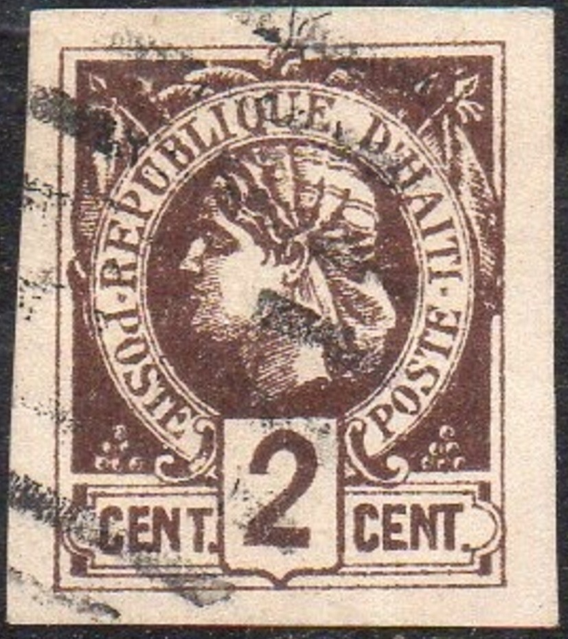
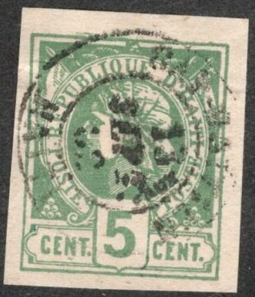
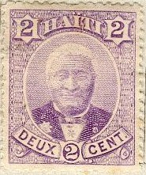
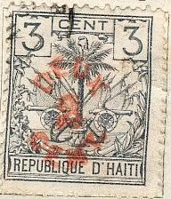
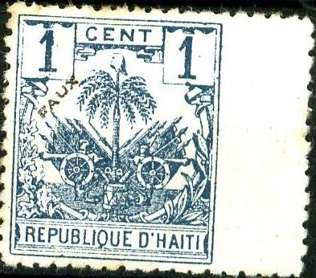

{kind=link}



Hayti
Return To Catalogue - Haiti 1898-1920 and miscellaneous
Note: on my website many of the
pictures can not be seen! They are of course present in the
catalogue;
contact me if you want to purchase it.


1 c red 2 c lilac 3 c brown 5 c green 7 c blue 20 c brown
50 subtypes seem to exist of each value. Two main types exist of the 1 c, 2 c and 5 c. The 5 c second type has the '5' larger. In the 2 c and 3 c the shading is different. The second type was issued in 1886.
Value of the stamps |
|||
vc = very common c = common * = not so common ** = uncommon |
*** = very uncommon R = rare RR = very rare RRR = extremely rare |
||
| Value | Unused | Used | Remarks |
| Imperforate (1881) | |||
| 1 c | R | *** | |
| 2 c | R | R | |
| 3 c | R | R | |
| 5 c | RR | RR | |
| 7 c | R | R | |
| 20 c | RR | RR | |
| Perforated (1882) | |||
| 1 c | *** | *** | Both types |
| 2 c | R | *** | Both types |
| 3 c | *** | *** | |
| 5 c | *** | *** | Both types |
| 7 c | R | *** | |
| 20 c | R | *** | |
Some numeral cancels

German ship cancel: "AUS WESTINDIEN P.HAMBURG ?? UBER
W??"


Postal forgeries
Postal forgeries also seem to exist, they are perforated 14 or 16 (genuine perforated stamps are perforated 13-13 1/2). They seem to have been used in 1882 in Cap Haitien. These forgeries are extremely rare in unused condition. They are described in 'Postal Forgeries of the World' by H.G.L. Fletcher. The last "E" of "REPUBLIQUE" should have a longer lower leg in the genuine stamps, but has a leg equal to the upper leg in the postal forgeries. They also have slightly different ornaments besides the value inscription (the 'C' shaped ornaments). All values seem to have been forged; the number '1' is too thick in the 1 c, the '2' too wide in the 2 c, the '3' too short in the 3 c, the '5' has a wide head in the 5 c aswell as the '7' in the 7 c, and the '2' of the 20 c has a diagonal break at the left bottom. The maker of these postal forgeries was probably a certain George Reine from Cap Haitien (see http://www.haitiphilately.org/Documents/Downloads/Liberty%20Head%20Forgery%20Exhibit.pdf).
Philatelic forgeries were made by Moens, Panelli, Baguet, Mekeel and Fournier, examples:



Alfred Baguet forgeries. They also exist with the cancel
"PORT-AU-PRINCE HAIT 7 SEPT 81" (sometimes even double
or three times applied on one stamp).

(Probably another Baguet forgery with 'FAUX' overprint)
I've been told that the above forgeries were made by Alfred Baguet (Paris, around 1908), the bottom of the value tablet is double (below the 1 for example). The 'Q' touches the frame line above it.
Some other forgeries with distinghuishing characteristics:



Some Italian forgeries (Panelli) often pasted on pieces of paper.
The right hand side flag touches the outer border line and does
not, as in the genuine stamps, stay away from it at some
distance.
Fournier has also made forgeries of these stamps. Since they apparently obey the below given distinguishing characteristics, I presume they are Fournier forgeries. Fournier forgeries are often cancelled with "CAP-HAITIEN 13 SEPT. 82 HAITI" in a double circle.
Fournier forgeries
Forged Fournier cancel, image obtained from a 'Fournier Album of
Philatelic Forgeries': "CAP-HAITIEN 13 SEPT. 82 HAITI"



Fournier forgeries.
Fournier forgeries as taken from the Fournier Album.

Probably a forgery with a very weird facial expression

Forgery of the 20 c value
According to the document mentioned below, the Mekeel forgery only exists of the 1 c value. It has very large bottom serifs to the '1' and damaged bottom corners.

Moens forgery of the 1 c value.
The Moens forgeries have cancels consisting of dots that do not appear on genuine stamps. They only exist in the values 1 c, 7 c and 20 c (?). In the 1 c Moens forgery, the '1' is too small. The 7 c Moens forgery has the '7' different from the genuine stamps. The 20 c Moens forgery has no upstroke in the lower righ part of the '2' of '20'.
Also be aware of trimmed perforated stamps pretending to be rarer imperforate stamps.
Cut-outs from 1984 commemorative stamps of Haiti are also sometimes offered as 'genuine'.
Literature: http://www.haitiphilately.org/Documents/Downloads/Liberty%20Head%20Forgery%20Exhibit.pdf
A stamp dealer label with an image of a stamp of Haiti from
L.Bernard, 18 Rue de Clignancourt in Paris.

(Reduced sizes)
1 c red 2 c violet 3 c blue 5 c green Surcharged
'DEUX 2 CENT' on 3 c blue
Value of the stamps |
|||
vc = very common c = common * = not so common ** = uncommon |
*** = very uncommon R = rare RR = very rare RRR = extremely rare |
||
| Value | Unused | Used | Remarks |
| 1 c | * | * | |
| 2 c | * | * | |
| 3 c | ** | * | |
| 5 c | *** | * | |
| 2 c on 3 c | * | * | |
Palm tree with straight branches

1 c lilac 2 c blue 3 c grey 5 c orange 7 c red
Value of the stamps |
|||
vc = very common c = common * = not so common ** = uncommon |
*** = very uncommon R = rare RR = very rare RRR = extremely rare |
||
| Value | Unused | Used | Remarks |
| 1 c | * | * | |
| 2 c | ** | * | |
| 3 c | ** | * | |
| 5 c | *** | * | |
| 7 c | *** | *** | |
Surcharged

'DEUX 2 CENT' (red) on 3 c grey
Value of the stamps |
|||
vc = very common c = common * = not so common ** = uncommon |
*** = very uncommon R = rare RR = very rare RRR = extremely rare |
||
| Value | Unused | Used | Remarks |
| 2 c on 3 c | ** | ** | |
Palm tree with curved branches (1892)

1 c lilac 1 c blue 2 c blue 2 c brown 3 c grey 3 c brown 5 c orange 5 c black 7 c red 7 c brown 20 c brown 20 c orange
Value of the stamps |
|||
vc = very common c = common * = not so common ** = uncommon |
*** = very uncommon R = rare RR = very rare RRR = extremely rare |
||
| Value | Unused | Used | Remarks |
| 1 c lilac | * | c | |
| 1 c blue | c | c | 1896 |
| 2 c blue | * | * | |
| 2 c brown | * | * | 1896 |
| 3 c grey | * | * | |
| 3 c brown | * | * | 1896 |
| 5 c orange | *** | * | |
| 5 c black | * | * | 1896 |
| 7 c red | * | * | |
| 7 c brown | c | c | 1896 |
| 20 c brown | * | ** | |
| 20 c orange | * | * | 1896 |
Surcharged (1898)

Left overinked surcharge, right normal surcharge.
'DEUX 2 CENT' on 20 c brown 'DEUX 2 CENT' on 20 c orange
Value of the stamps |
|||
vc = very common c = common * = not so common ** = uncommon |
*** = very uncommon R = rare RR = very rare RRR = extremely rare |
||
| Value | Unused | Used | Remarks |
| 2 c on 20 c brown | ** | ** | |
| 2 c on 20 c orange | * | * | |
Cancels: I've often seen an oval with 'AMSTERDAM W.INDIE NEDERL. PACKET BOOT' with the date in the center.
Imperforate stamps originate from unfinished sheets (if they are not forgeries).
Forgeries of these stamps exist, example:



Forgery. According to 'Focus on Forgeries' By V.A.Tyler, the
bottom of the 'Q' of 'REPUBLIQUE' is different from the genuine
stamps in these forgeries. The design is printed quite badly when
compared to the genuine stamps. Also, the ' in 'D'HAITI' is not
slanting. When perforated, the perforation seems to be done quite
badly. They are known as Genoa forgeries (possibly the forger N. Imperato; source Ebay Discussion Board
2012 or the Serrane guide).
I've been told that the next stamps are also forgeries, the perforation is done very badly:
(Forgeries, reduced size)

(Reduced size)
2 c red 5 c green
These stamps have watermark 'R.H.'.
Value of the stamps |
|||
vc = very common c = common * = not so common ** = uncommon |
*** = very uncommon R = rare RR = very rare RRR = extremely rare |
||
| Value | Unused | Used | Remarks |
| 2 c | * | * | |
| 5 c | * | * | |
The values 1 c blue, 3 c lilac, 7 c grey and 20 c orange were not issued, however they do exist used on letter. Most of them were addressed to the family Reine. This issue was financed by George Reine. George Reine was the man probably responsable for the postal forgeries of the first issue as well. A nephew of George, also named George Reine was a stamp dealer in Paris (France) and offered a lot of 'unique' Haiti items. Source: http://www.haitiphilately.org/Documents/Downloads/Liberty%20Head%20Forgery%20Exhibit.pdf. Also imperforate sheets of these unissued stamps seem to exist.
Haiti 1898-1920 and miscellaneous
{kind=link}
{kind=link}
{kind=link}
{kind=link}